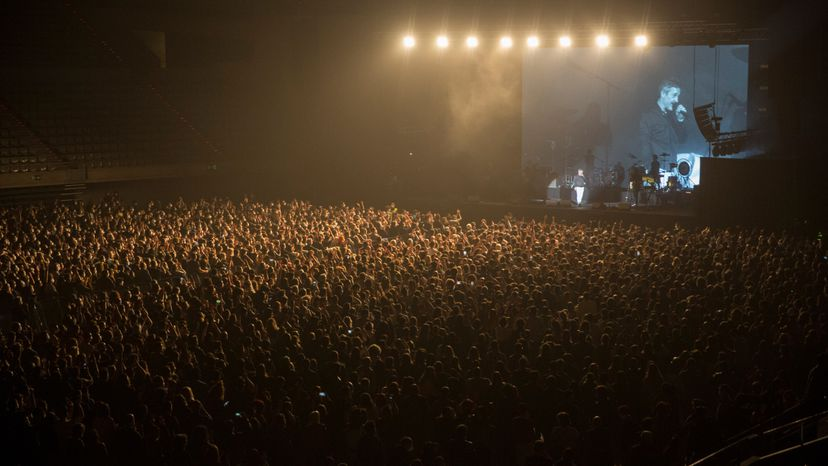
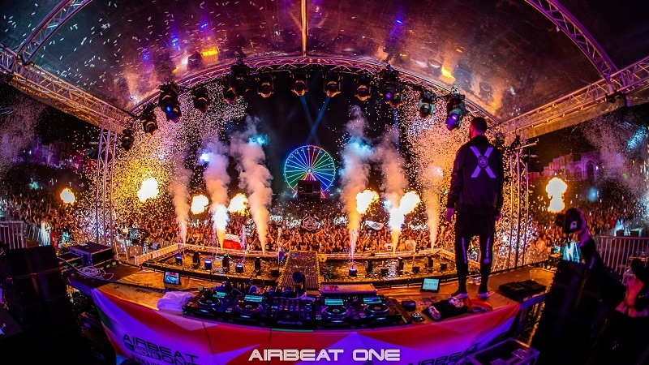
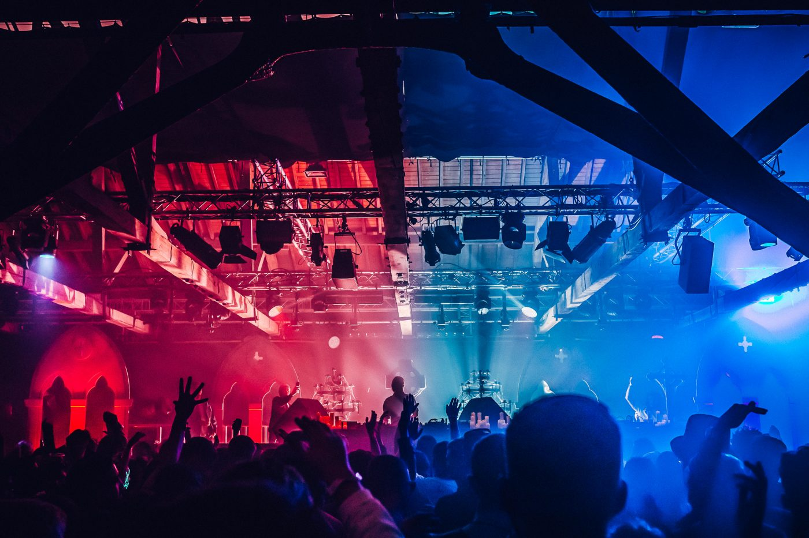
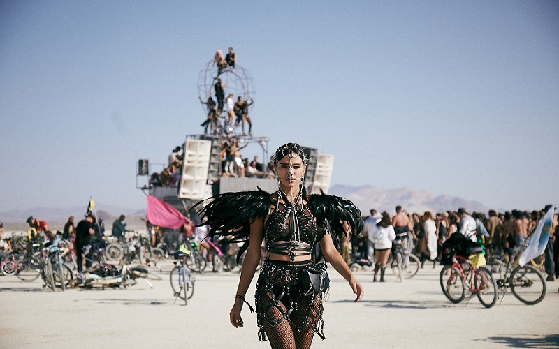
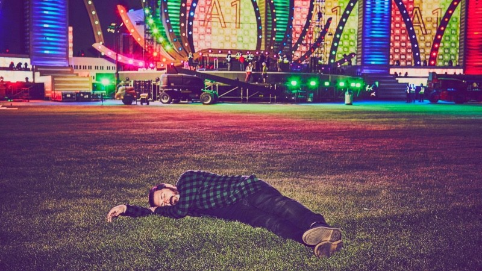

-NOTICIAS DE LA MUSICA ELECTRONICA DEL ULTIMO MES-
-YA NO HAY EXCUSAS PARA CONCIERTOS Y FESTIVALES-

Los resultados de la prueba realizada en Barcelona con Love of Lesbian son muy positivos y esperanzadores
Con algo de retraso, pero al fin se dan a conocer los datos recogidos tras el concierto piloto realizado en Barcelona, y al que asistieron 5.000 personas sin distanciamiento social, que tuvo lugar hace un mes en el Palau Sant Jordi.
Los resultados arrojan tan solo 6 contagios en los 14 días posteriores al concierto, de los cuales 4 de ellos se ha descartado su contagio en el evento. De los otros 2 casos sencillamente no se puede asegurar ni desmentir que se contagiasen en el mismo. Todos ellos asintomáticos o con afectación leve.
Por tanto nos movemos entre 0 y 2 contagios, para un aforo de 5.000 asistentes. Sin ánimo de frivolizar, parecen datos más acordes al riesgo de contraer Covid-19 en una terraza desayunando, que al de un evento de estas características. Estos datos demuestran sin duda, que hay formas de poder celebrar este tipo de eventos.
-DON DIABLO VENDE SU NUEVO PROYECTO DIGITAL POR $1,2 MILLONES-

Don Diablo es uno de esos artistas que evolucionan a la perfección según la tecnología y la sociedad va dando pasos adelante en esta nueva era digital y global que estamos viviendo. Siempre hemos visto al holandés mimetizarse con los nuevos tiempos, perfilando sus sonidos, siempre al servicio de lo que su comunidad le va exigiendo y, ahora, está abriéndose camino en esta revolución del arte digital.
Y os preguntaréis, ¿cómo lo puede llevar a cabo? El último gran proyecto del productor, ‘Don Diablo: Destination Hexagonia‘ es un concierto exclusivo de más de una hora donde Don Peppijn muestra toda su capacidad tecnológica y su música para crear una experiencia virtual de muchos kilates para sus miles de fans.
Pero aquí viene la parte que para algunos puede sonar a chino. Para conseguir ese concierto, los fans tienen que comprar NFT – Non fungible tokens – un tipo de criptodivisa que se usa para poder adquirir material digital artístico de forma exclusiva y única.
Así, todos los que hayan comprado su Destination Hexagonia recibirán una pieza hecha a mano y, dentro, un hard drive con el material para su visualización y autoría.
Gracias a esta acción, Don Diablo ha recaudado 600 monedas Ethereum, con un valor de $1.259.00 millones.
-FALLECE PIERCE FULTON-
El Dj y productor Pierce Fulton, fallece a los 28 años, tras una larga lucha con su salud mental
Hoy nos encontramos con la triste noticia del fallecimiento de Pierce Fulton con tan solo 28 años de edad.
Autor de importantes temas como ‘Runaway‘, ‘Kuagua‘ o su más reciente colaboración con Martin Garrix en ‘Waiting for Tomorrow‘.
Ha sido su hermano mayor Griff, quién a través de las redes de Pierce, ha desvelado el fallecimiento el pasado jueves de su hermano en un emotivo mensaje.
Por supuesto en el mismo no da detalles sobre su muerte, pero inicia su mensaje informando que falleció tras una “trágica lucha con su salud mental”.
Pierce Fulton nos deja con la misma edad -28 años- y por el mismo motivo que Avicii, tras librar una dura lucha con su salud mental, que finalmente se acaba cobrando una vida más entre los jóvenes de nuestra escena electrónica.
"Este último año ha sido increíblemente difícil para todos. Si tu o cualquier persona que conozcas ha tenido problemas, por favor tómese en serio su intuición, hable sobre sus sentimientos y busque ayuda"
Griff Fulton
Descanse en paz.
-3.000 ASISTENTES A UN EVENTO OFICIAL DE MÚSICA ELECTRÓNICA SIN DISTANCIA SOCIAL EN REINO UNIDO-

Se trató de un ensayo para valorar el impacto de un evento de este tipo; Hot Since 82 o Sven Vath, algunos de los artistas presentes en Liverpool, Reino Unido.
La noche, el ocio, los eventos y la música electrónica van de la mano. Es uno de los sectores más influyentes en Reino Unido, con cientos de eventos a la semana en las mayores ciudades del país. Tras un año sin poder saborear una de estas, Reino Unido ha vuelto a sentir con la música electrónica en la ciudad de Liverpool.
Este fin de semana se llevó a cabo un programa piloto en un evento al que asistieron más de 3.000 personas. Se trató de una fiesta de música electrónica organizada por Circus, en la que estuvieron presentes artistas de la talla de Hot Since 82 o Sven Vath, entre otros. Las imágenes de este evento se hicieron virales desde la tarde del mismo sábado, donde los artistas presentes comenzaron a publicar en sus redes sociales vídeos de la primera fiesta de música electrónica tras un año y media desde que iniciare la pandemia por COVID-19.
Lo cierto y verdad es que Reino Unido lleva un plan de vacunación muy avanzado que está permitiendo relajar las medidas en todos los sectores con mayor rapidez que en otros países. Los británicos esperan tener vacunada a su población antes de verano y, por tanto, que se puedan llevar a cabo este tipo de eventos con total normalidad a partir de este mismo verano.
¿Tendremos la suerte de vivir momentos como este durante el verano? La respuesta, muy pronto.
-BURNING MAN 2021 SOPESA PEDIR CARTILLA DE VACUNACIÓN-

Burning Man 2021 sigue muy de cerca la evolución de la pandemia y, por el momento, están trabajando en medidas que impliquen la vacunación obligatoria
Burning Man 2021 podría exigir cartilla de vacunación para poder asistir a su evento de este año. Lo que a todas luces parece ser una realidad que los europeos vamos a sufrir hasta que los jóvenes podamos ser vacunados, en Estados Unidos ya empieza a darse por hecho.
La CEO del festival Marian Goodell está elaborando un plan de viabilidad para poder celebrar el mítico festival de nuevo, y una de las vías de seguridad que plantea es pedir que todos los asistentes acudan ya vacunados para poder acceder.
Es una medida que, en Estados Unidos, podría no tener tanta repercusión pero que para ciudadanos de fuera de Norteamerica supone un no rotundo a poder desplazarse.
Y es que se espera que, al menos en España, en agosto esté vacunada la población de los ‘mayores’ en nuestro país pero lo cierto es que, a estas alturas, apenas se están cumpliendo unos plazos optimistas en los que los jóvenes podamos estar vacunados durante el otoño de este año.
Veremos como evoluciona la organización sanitaria de Burning Man 2021 y otros muchos festivales – como EDC Las Vegas – que consideran una obligación tener la vacuna para poder hacer vida normal.
-EDC LAS VEGAS EN OCTUBRE-

Finalmente EDC Las Vegas sucumbe a la lógica, y retrasa su celebración al mes de octubre
Hace apenas un par de semanas EDC Las Vegas, con el padre de la criatura -el señor Rotella– como portavoz, aseguraba que la celebración del festival tendría lugar en el mes de mayo. Esto es, en su fecha natural.
Su decisión de no retrasar el evento pese a la aún muy delicada situación global provocada por la pandemia, respondía a que el Condado de Clark había anunciado previamente que a partir del 1 de mayo permitiría la celebración de eventos masivos. Algo que parecía precipitado y sin sentido.
Y lo era porque la situación en EEUU dista de ser la adecuada para la celebración de estos eventos. Pero también, según reflejaba nuestro compañero Gonzalo -con entradas para asistir a dicho evento- que los extranjeros tenían realmente complicada su asistencia, lo que limitaba mucho la asistencia el festival.
Pero la razón que finalmente ha forzado el retraso de su fecha de celebración es el cambio de postura de las autoridades locales, que ahora exigen para la reapertura de los eventos que sus residentes hayan alcanzado al menos un 60% de vacunados, algo que por el momento está lejos de alcanzarse.
I am sorry to say that EDC Las Vegas needs to move to October. I want to thank everyone who has put their heart and soul into this show—the Insomniac team, artists, agents, managers, production crews, the Las Vegas Motor Speedway staff, the government ... https://t.co/z2Jhy2gf5Kpic.twitter.com/Pqpz9eKbR6